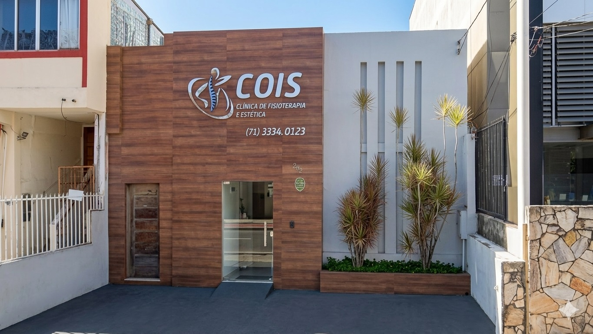
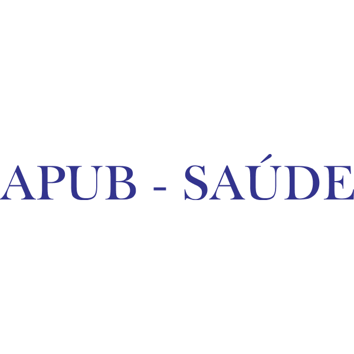
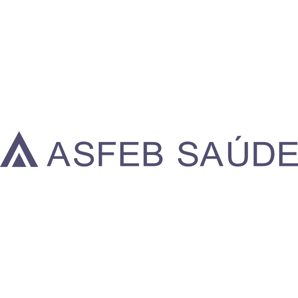
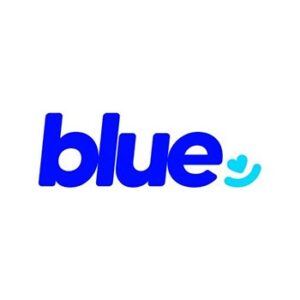
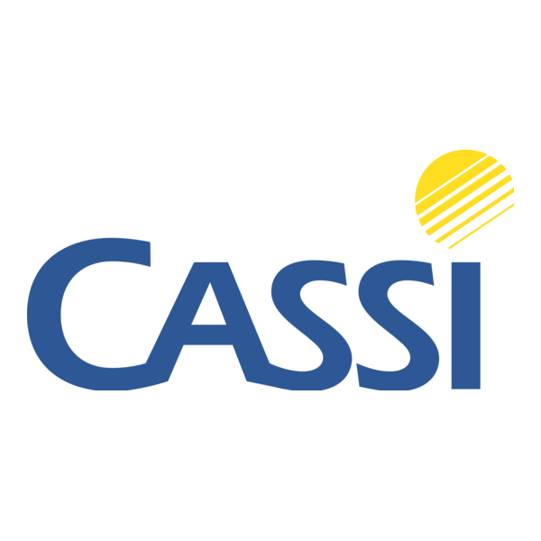
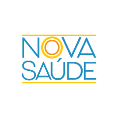
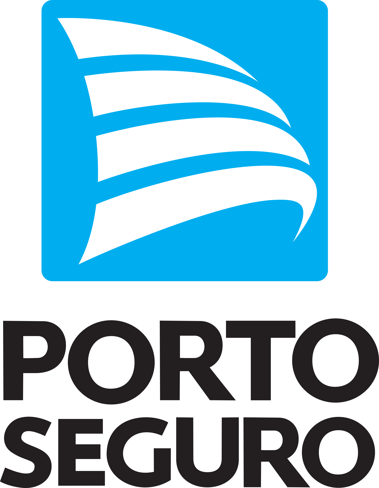

Na Clínica COIS, cuidamos de você e da sua família com excelência, acolhimento e resultados reais. Agende sua avaliação e descubra uma nova forma de cuidar da sua saúde.
Agende sua Avaliação
Bem-vindo à Clínica Cois, um centro de referência em Fisioterapia no coração do Rio Vermelho, em Salvador. Temos orgulho em oferecer tratamentos personalizados que respeitam o tempo, a dor e a história de cada paciente.
Nosso trabalho vai além da recuperação física — acreditamos no cuidado integral, onde técnica e acolhimento caminham juntos. Com uma equipe multidisciplinar altamente qualificada e atualizada, utilizamos métodos modernos e uma estrutura completa para entregar mais do que resultados: entregamos confiança.
Aqui, você vai encontrar profissionais que escutam, acolhem e caminham lado a lado com você em cada etapa da sua evolução. Estamos prontos pra cuidar do que realmente importa: a sua saúde.
Na Clínica Cois, entendemos que cada pessoa tem um corpo, uma história e uma dor diferente — por isso, nossos atendimentos nunca seguem um modelo padrão. Oferecemos uma variedade de serviços de fisioterapia pensados para diferentes necessidades e fases da vida.
Os primeiros 21 dias pós-cirurgia são determinantes. A eficácia do procedimento e seu retorno à vida ativa é possível, conheça mais sobre a nossa metodologia de reabilitação.
Saiba maisNa Clínica Cois, entendemos que dor não é apenas um sintoma, é uma experiência individual, influenciada por fatores físicos, emocionais e neurofisiológicos. Vamos ajudar você.
Saiba maisAqui na Clínica Cois você não esta sozinho. Conheça os nossos pilares e descubra os verdadeiros obstáculos e como você pode transformá-los em ação e resultado consistente!
Saiba maisInvestir em condicionamento físico na terceira idade é essencial para garantir uma vida mais ativa, saudável e independente. Veja o que torna o nosso serviço único.
Saiba maisQuando se trata de recuperar a qualidade de vida, precisão e segurança são fundamentais. Na Clínica Cois, sua reabilitação é conduzida com base em dados objetivos.
Saiba maisMétodo que trata desvios posturais através de alongamentos globais, aliviando dores e realinhando o corpo de forma integrada e duradoura.
Saiba maisAjustes articulares precisos para restaurar a função do sistema nervoso e musculoesquelético, aliviando dores na coluna e melhorando a mobilidade.
Saiba maisTécnica milenar que estimula pontos energéticos do corpo para alívio de dores, redução do estresse e tratamento de condições crônicas com agulhas finas.
Saiba maisTerapia com ozônio medicinal que potencializa a cicatrização, reduz inflamações e fortalece o sistema imunológico, auxiliando em diversos tratamentos.
Saiba maisMétodo de condicionamento físico que fortalece o core, melhora a flexibilidade e a postura, com exercícios controlados e respiração coordenada.
Saiba maisPilates adaptado para crianças, desenvolvendo coordenação motora, equilíbrio e concentração de forma lúdica, auxiliando no desenvolvimento saudável.
Saiba maisTratamento especializado para disfunções do assoalho pélvico, incontinência urinária, dores pélvicas e recuperação no pós-parto, com abordagem humanizada.
Saiba maisAcompanhamento fisioterapêutico durante a gestação para alívio de dores, preparação para o parto e recuperação pós-parto com segurança e acolhimento.
Saiba maisTécnicas manuais de massagem terapêutica para alívio de tensões musculares, redução do estresse, melhora da circulação e bem-estar geral.
Saiba maisAbordagem que utiliza microinjeções de anestésico em pontos específicos para tratar dores crônicas, disfunções e reequilibrar o sistema nervoso autônomo.
Saiba maisProcedimentos minimamente invasivos com aplicação de medicamentos e substâncias terapêuticas para tratamento de dores, inflamações e recuperação muscular.
Saiba maisTratamentos estéticos personalizados para rejuvenescimento facial, redução de medidas e cuidados com a pele, realçando sua beleza natural.
Saiba maisDepilação com técnicas modernas para resultados duradouros e menos dolorosos, cuidando da sua pele com produtos de alta qualidade e higiene.
Saiba maisCuidados especializados com a saúde dos pés, tratamento de calosidades, unhas encravadas e outras condições que afetam o bem-estar e a mobilidade.
Saiba maisTécnicas de design e micropigmentação para sobrancelhas perfeitas, realçando o olhar com resultados naturais e duradouros.
Saiba maisCuidados completos para as unhas das mãos e pés, com tendências em nail art, alongamento e esmaltação para um visual impecável.
Saiba maisTratamento a laser para rejuvenescimento, cicatrização, redução de pelos e manchas, com tecnologia segura e resultados eficazes.
Saiba maisTécnica de massagem suave que estimula o sistema linfático, reduz inchaços, elimina toxinas e combate a celulite de forma eficiente.
Saiba maisTerapia com ventosas que promove relaxamento muscular, melhora a circulação sanguínea e auxilia no alívio de dores e tensões.
Saiba maisTecnologia que utiliza ondas eletromagnéticas para estimular colágeno, firmar a pele, reduzir gordura localizada e combater a flacidez.
Saiba maisTratamentos de renovação facial com ácidos e substâncias específicas para clarear manchas, suavizar rugas e revitalizar a pele do rosto.
Saiba maisProcedimentos estéticos minimamente invasivos para equilibrar proporções faciais, suavizar marcas de expressão e realçar a beleza com naturalidade.
Saiba maisA Clínica Cois foi projetada para que você se sinta à vontade desde o primeiro momento. Contamos com salas de atendimento e exercício, todas climatizadas e equipadas para garantir conforto, privacidade e eficiência durante seu tratamento.
O ambiente é acolhedor, silencioso e adaptado para diferentes perfis de pacientes — desde idosos até atletas em reabilitação. Nossa estrutura proporciona uma experiência tranquila e segura em cada etapa da sua recuperação.
Estrutura completa para sua reabilitação
Avaliação fisioterapêutica com precisão e tecnologia de ponta
Na Clínica Cois, cada paciente passa por uma avaliação detalhada antes de iniciar o tratamento. Utilizamos o que há de mais moderno em tecnologia diagnóstica para oferecer uma análise precisa das suas condições.
Com esses dados em mãos, conseguimos criar um plano terapêutico personalizado, seguro e totalmente alinhado com as suas reais necessidades de reabilitação.
Agende sua avaliação agora





Seu convênio não está na lista? Entre em contato conosco!
Perguntar sobre convênio